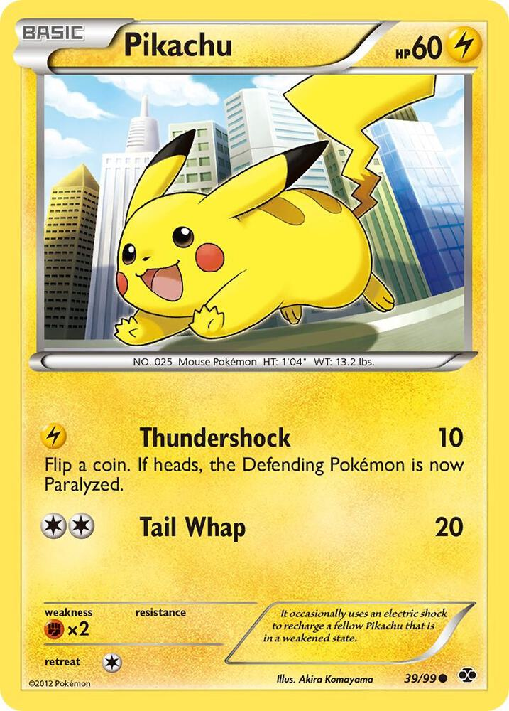
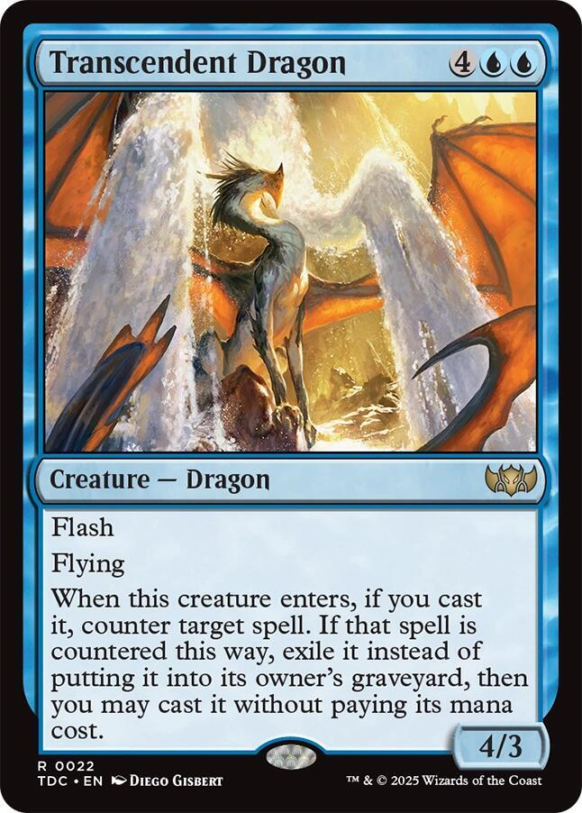
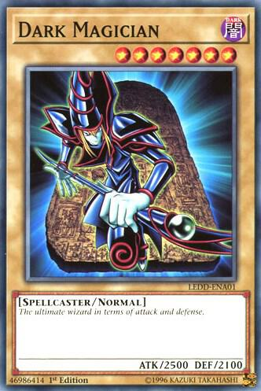
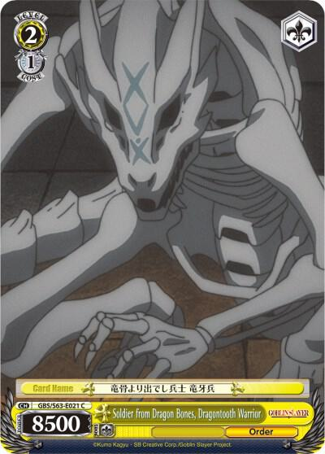

The TCGs!

Pokemon
Pokemon is one of the most popular card games around. It is published by The Pokemon Company and based on a game developed by Game Freak, it is beloved by fans of all ages. It features adorable and sometimes fiersome creatures to be battled with. There are a few different types of cards, but this Pikachu is the most basic. Note that the rarity and set indicators will be on the bottom of the card, either in the left or right corner depending on the set. It is the most collected TCG out there and there are tons of different arts and variants to collect.

Magic the Gathering
Magic the Gathering, published by Wizards of the Coast, is the most played TCG out there. It is set in the realms of the planeswalkers, interdimensional beings that can travel between planes, or worlds. These many fantastical planes are the setting for many of the card games sets and they range from fantasy to sci-fi, to old-fasioned western and many more beyond. The card pictured is a basic creature card from one of the fantasy sets. Note the rarity and set symbol, which can be found on the right side underneath the art. Magic also has a plethora of different variants and artstyles for the avid collector.

Yu-Gi-Oh
Yu-Gi-Oh is published by Konami and is my personal favorite game from my childhood. The card arts and themes are truly my favorite and they bring me back to watching the anime on my couch with my dad when i was younger. It is not quite as popular as the other two main TCGs, but it remains a behemoth compared to most others. Like Magic and Pokemon, Yu-Gi-Oh has many creatures, like the Dark Magician pictured here, that players battle each other with to see who can come out on top. Yu-Gi-Oh rarities will either be under the art of the card or in the bottom left and, of course, there are plenty of rarities and different artstyles to collect and trade.

Other
There are tons of other TCGs out there that aren't quite as established as the big three, but they can be quite fun and are always a delight to look at. The card pictured here is from another one of my favorite TCGs, Weiss Schwarz. Weiss has a variety of sets that cover popular animes and manga, as well as mainstream Disney properties like Marvel and Star Wars. My favorite thing about Weiss is the SPs, often signed by the voice-actors and actresses, or the creators of a given anime or show. Other notable TCGs are Union Arena, the One Piece TCG, Grand Archive, Flesh and Blood, and many more. If you have any questions, feel free to check out the resources page or contact me via email or our contact form.